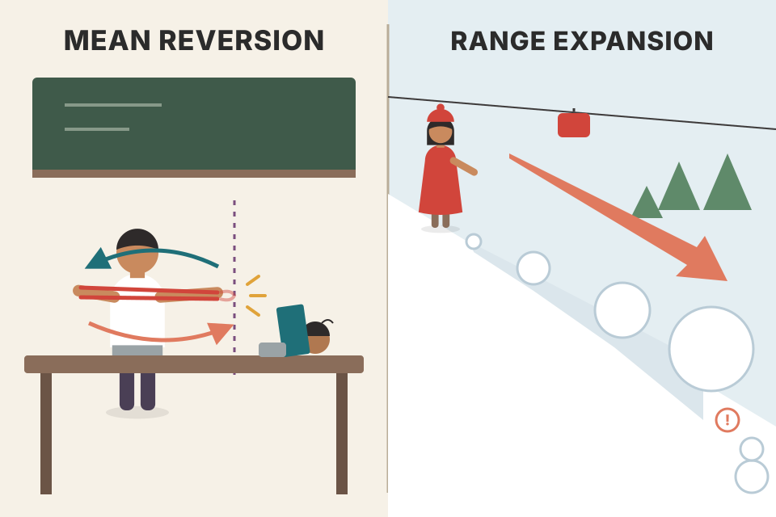
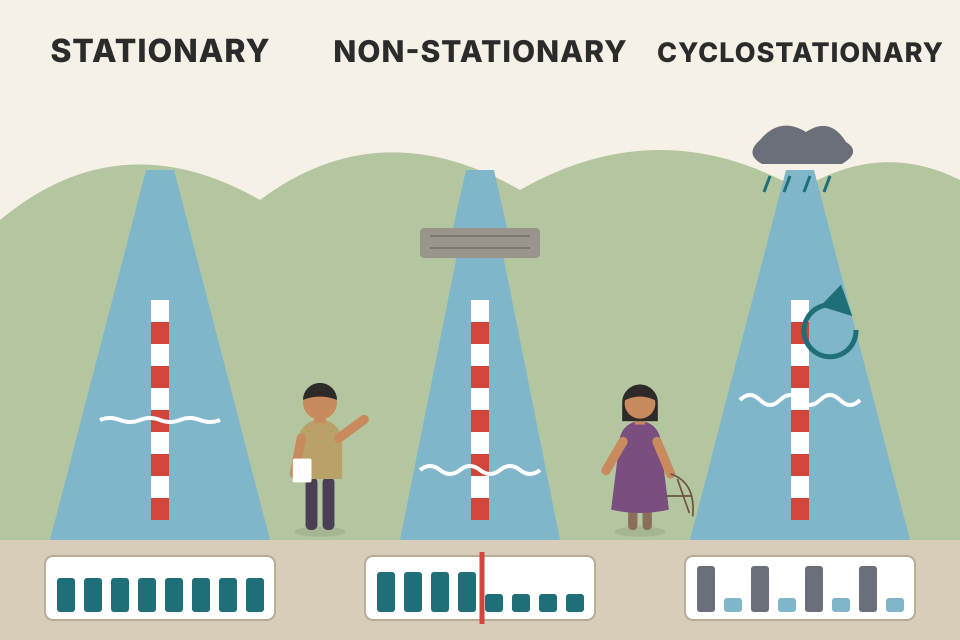
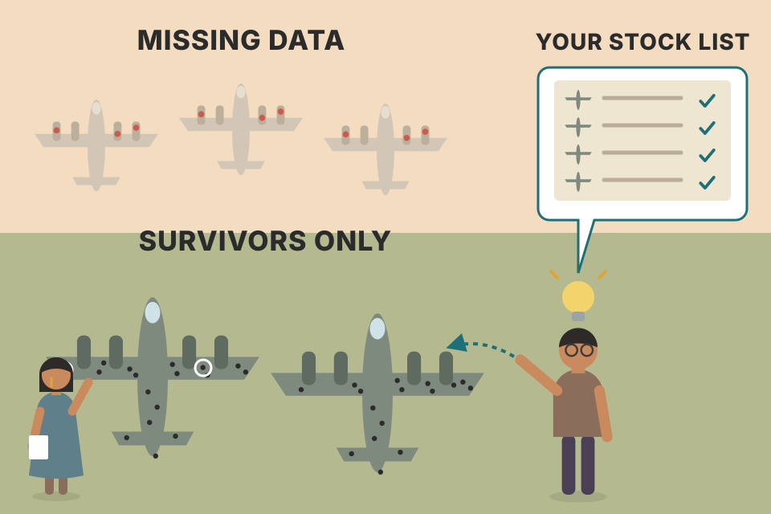
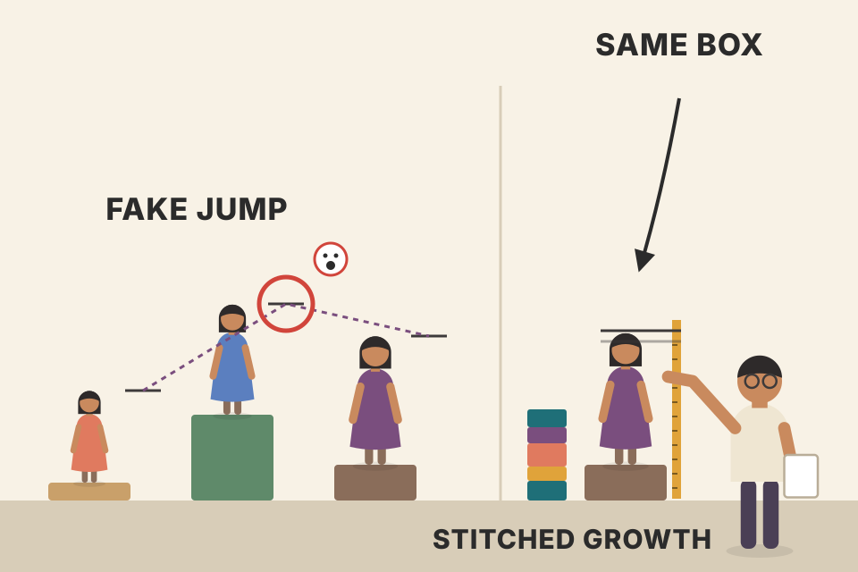

Chapter 12 opens the research half of the book. It doesn't test a single pattern yet. It sets the ground rules: which markets go into the sample and why, which years, what can quietly bias the answer (changing markets, correlated stocks, companies that vanished), why random data belongs in every test, and the event-study method, which Grimes calls Pythia, that the next four chapters use. Every idea is here in the book's order, with a live simulation wherever there is a mechanism. All prices and returns on this page are simulated. The only real numbers are the ones Grimes reports, and they are labelled with their table.
The chapter is a chain. A test result is only as good as the data it ran on and the method that produced it, so Grimes describes both before he shows a single result. Each row below is one link in that chain.
The chapter opens with a line from Blaise Pascal: in short, people adopt beliefs because the beliefs appeal to them, not because anything proved them. That sets the tone. This part of the book applies quantitative tests to real market data, and Grimes gives it two goals:
With that aim, the coming chapters examine two widely used tools:
Knocking down common errors is the first part. Grimes says knowing what actually works matters far more, so the research closes with a high-level look at the two main modes of market behaviour, with statistical evidence of non-random price movement under specific conditions (next plate).
A drug trial. Lots of people "know" a remedy works because they took it and got better. A trial asks the boring questions first: compared to what, in which patients, over how long, and could chance alone explain it? Chapter 12 is the trial protocol. Chapters 13–16 are the trial results.
The verdicts in the right box are Grimes' summaries from this introduction; the evidence for each is in Chapters 13, 14 and 16.
Why do untested beliefs survive? A chart shows you the times a level "worked" vividly and the times it didn't hardly at all. Without counting every instance, and comparing against what price does anyway, your memory acts as a filter that keeps the hits. A quantitative test removes the filter: it counts every case, including the dull ones. That is also why Grimes stresses designing the study carefully first. A careless test is just a more official-looking filter.
murphy_moving_averages.md and the Murphy Chapter 9 page treat MAs as trend tools. Grimes' claim is narrower: not that MAs are useless, but that price doesn't respect them as support or resistance more than chance.The two modes the research ends on:
The two are opposites in many ways. Grimes promises to measure each, to look for conditions that make one mode more likely than the other in the next price action, and to show a verifiable statistical edge behind both. Even a discretionary trader, he says, must stand on a base of statistically significant market behaviour.
Then a list of reasons for humility. Any result is specific to the data set it came from, and it may say as much about the technique as about the market, so tests must be built and specified properly. Results will hopefully generalise to other markets and periods, and they are more likely to if the tests and the universe are well built. But there is never absolute truth:
At best, well-built tests guide us to a better understanding; much always stays unknown.

A rubber band and a snowball. Stretch the band (a big move) and it snaps back: mean reversion. Push a snowball downhill (a big move) and it picks up more snow and rolls further: range expansion. A real market can act like either, at different times or in different conditions, which is why the research asks when each one shows up.
x-axis: day 0 (close of the big day) → day 10. y-axis: average cumulative move after the big day, in units of one day's standard deviation (the big day itself, 2+ SD, is left out so the follow-through is visible). 40,000 simulated days per draw; φ is my knob, not a market estimate.
Each simulated day's return is a fixed share φ of yesterday's return plus fresh noise. With φ below zero, a big up day tends to be followed by a small down day: the average path after big up moves bends back (rubber band). With φ above zero it keeps going (snowball). At φ = 0 the market is a random walk and the path after a big move is flat, apart from noise. Real markets don't run on one fixed φ; Chapter 16 measures which mode shows up under which conditions. Also notice how small the effect is even at |φ| = 0.1: a tenth of the big move, spread over a day. That's the size of edge to expect.
backtest_results_summary.md).One of the most important decisions in any market study is the universe the tests run on. It has three parts: its composition (the exact stocks or markets), its timeframe (intraday, daily, weekly and so on) and the time period covered.
Most traders assume all markets trade alike: a pattern that works on stocks should work on futures and forex too. Grimes asks how they know that, and whether it's even true. He tells you to ask yourself that question all the time. The only way to answer it is to build tests that show whether a tendency holds across different markets and timeframes, and whether it has been stable over time. Choosing the test universe properly is the first step.
A recipe tested only in one kitchen, on one stove, in one season. Maybe it works everywhere. Maybe it depended on that stove. You find out only by cooking it in other kitchens. Composition, timeframe and period are the three "kitchens" a trading idea has to be cooked in.
I built three made-up "asset classes" with different hidden behaviour: class A slightly mean-reverting (φ = −0.05), class B slightly trending (φ = +0.05), class C a pure random walk. Each has 20 markets of 2,500 days. The rule is the same everywhere: buy after a down close, judged by the next day's return minus that class's average day. The bars show the excess and the whiskers ±2 standard errors. In A the rule earns; in B the identical rule loses; in C it is zero within noise. Pool all three together and you'd get a blurred average that describes none of them. That is why Grimes tests each asset class separately.
backtest_results_summary.md).A key quantitative question is whether asset returns are stationary. Slightly simplified: a stationary process is a random process whose probability distribution doesn't change over time. If market returns were stationary, the same market examined over different periods would show no shift in its centre (mean, median) or its spread (dispersion).
Academics debate whether returns are stationary. From a trader's point of view, Grimes says, they don't seem to be. His examples: a company that starts as a minor player and later leads its industry; a commodity once produced and consumed mostly at home that later develops a large global market as domestic supply runs out. After structural changes like these, the asset really does trade differently.
A side note in the book: some processes are cyclostationary. They look stationary except for a fairly predictable cyclic or seasonal part. Anything predictable can be removed from the data, turning a cyclostationary series into a stationary one. Real examples with a strong seasonal part might be retail sales and the volatility of natural gas prices.

A river gauge. A stationary river has the same typical level and the same size of ripples every year. A non-stationary river was dammed upstream in year five: the level and ripples are different afterwards, for good. A cyclostationary river floods every monsoon and is calm in winter; once you know the calendar you can subtract the season and what's left is steady.
The top panel shows each simulated day's return; the bottom panel shows the 60-day rolling mean and rolling standard deviation. For the stationary series both wander only by sampling noise. In the non-stationary series I change the rules halfway (calm and gently rising, then twice as volatile and falling), and the rolling statistics jump to a new level and stay there. In the cyclostationary series volatility swells and shrinks on a 250-day cycle. Tick "remove the known seasonal part": dividing each return by its known seasonal volatility makes the rolling SD flat again. That is Grimes' point that a predictable component can be backed out. A structural change can't be removed that way, because nobody knew the calendar of the dam.
trading_equations.md §12): GARCH is a model in which volatility changes day to day but keeps returning to one long-run level, a middle ground between these three pictures.Because returns are non-stationary, no technical method is guaranteed to stay valid. Any trading edge should be checked over a period long enough to judge whether it is stable. Results change a lot depending on whether the period was a roaring bull market, a flat quiet stretch or a bear market, and anyone doing analysis has to account for that.
Grimes complains that too many published tests use only the last one or two years of data. Such tests are useful if the future looks like those recent years, and that is a weak assumption to build a trading programme on.
Judging a city's weather from one July. You'd conclude it never rains. Ten years of records tell you about monsoons, droughts and cold snaps, and whether "sunny" is the rule or one season.
I generate ten years (2,520 days) that switch between a trending regime (φ = +0.12) and a mean-reverting regime (φ = −0.12), each lasting one to three years at random. The rule holds yesterday's direction (or the opposite). Look at the five two-year bars: the rule can be strongly up in one window and strongly down in the next. A trader who tested only the latest window sees one bar and believes it. The ten-year bar averages the regimes, so it sits between the extremes and tells you mostly how the years happened to be split between them; it describes no single window. Nothing here is changing about the rule; the market underneath changed.
backtest_results_summary.md).Assets and asset classes are correlated to different degrees. In times of financial stress it's common to see everything moving the same way: coffee, cocoa, crude oil, stocks, even gold futures all crushed on the same day.
Many standard statistical methods assume events are independent. But in a set of 1,000 stocks you may find more than 800 making large moves in the same direction on the same day, which breaks any reasonable meaning of independence. So big tests across many assets can carry much less information than a test of the same size in another field. Tight correlation effectively shrinks the sample size. Grimes' equities sample has more than 1,380,000 trading days, yet because of correlation these are not 1,380,000 independent events.
Polling 1,000 people about the weather, but all 1,000 are standing under the same umbrella. You got 1,000 answers and roughly one piece of information. Stocks on a crash day are standing under one umbrella.
Each simulated stock's return is a common "market" shock plus its own shock; ρ sets how much is shared. At ρ = 0 the share of stocks rising each day clusters tightly around 50%. As ρ grows, whole days tip to one side: some days 80–90% of the stocks rise or fall together, just as Grimes describes. A standard formula puts a number on the lost information. For N equally correlated series, the average behaves like Neff = N ÷ (1 + (N − 1)ρ) independent ones. With 1,000 stocks and ρ = 0.3, that's about 3.3. Adding stocks barely helps once ρ is above zero; adding time (more independent days) does.
1,381,685 stock-days ÷ 600 stocks ≈ 2,300 days per stock. If the average pairwise correlation were 0.3, the 600 stocks would act like 600 ÷ (1 + 599 × 0.3) ≈ 3.3 independent stocks, so the sample behaves more like 3.3 × 2,300 ≈ 7,600 independent days than 1.38 million. The real figure depends on the true correlation, which also rises in crises, but the order of magnitude is the point: a huge sample can be statistically modest.
Grimes tries to handle these problems in three ways:
The basket: 600 individual stocks, randomly sampled from three large market-cap tranches; 16 futures markets; and 6 major world currencies against the US dollar. Every test was also run on three random (stochastic) price models for calibration:
The random models are a placebo group. If a "signal" shows an edge on random data too, it's an artefact of the method, not a property of markets. Three different placebos guard against three different artefacts: plain noise, fat tails, and volatility that clusters.
All three have the same average daily volatility (1%). Normal: no fat tails (excess kurtosis near 0) and no memory. Resampled history: I can't ship Dow data on this page, so I simulate a fat-tailed 7,500-day "history" and draw days from it at random with replacement, which is the procedure Grimes describes. It keeps the real distribution's fat tails (excess kurtosis well above 0) but destroys any order, so big days don't cluster. GARCH: today's variance depends on yesterday's surprise and yesterday's variance, so wild days bunch together. Look at the lower panel and the readout's "|r| lag-1 autocorrelation": clearly positive only for GARCH. Real markets show both fat tails and clustering; a signal that "works" on any of these three is fooled by noise.
trading_equations.md §12 has the GARCH(1,1) formula; my GARCH here uses α = 0.08, β = 0.90 inside your note's typical ranges. Your note price_physics_basics.md records that GARCH helped little in your tests: it forecasts the shaking, not the direction.All tests in this part run from 1/1/2001 to 12/31/2010. The reasons Grimes gives:
He concedes a fair criticism: the decade has no large secular bull market, which is probably what many equity traders care about most. The tests can be repeated on other periods to check consistency. Also, these ten years held big structural transitions: many of the markets moved from open-outcry pits to electronic trading, and others, such as US equities, saw their electronic marketplaces mature through major regulatory and structural changes.
Band boundaries are approximate; Grimes names the phases, not exact dates.
A car test drive that includes a motorway, a traffic jam and a mountain pass, but no off-road track. You learn a lot, and you know exactly what you didn't test.
The choice is a trade-off between relevance and coverage. Older data covers more kinds of markets but may describe a market structure (pits, wide spreads, slower information) that no longer exists. Recent data is relevant but may cover only one regime. Grimes picks ten recent years that still contain three different equity regimes and says openly what's missing, so a reader knows where the results may not apply. The move to electronic markets is itself a non-stationarity (plate 4): the same contract may trade differently before and after.
How the equity sample was built:
Grimes notes that although almost 8,000 tickers are listed, only a few thousand trade actively. Many very small companies are extremely illiquid, sometimes going days or weeks without a single trade (presumably why the break points stop at the 2,500th name, though the book doesn't spell that out).
Table 12.1 breaks each tranche down by industry across eleven groups. One large-cap company was classed as a conglomerate and left out of the tally, so the large-cap column adds to 199. Services and Financial are the biggest groups in every tranche.
On liquidity: smaller stocks generally trade less actively and get less public attention, so they are usually less liquid and often trade more erratically than large caps. Grimes' sample shows this clearly: dispersion is noticeably larger in the mid- and small-cap tranches (next plate). Smaller stocks are also known for higher average returns than large caps, an academic anomaly called the size effect, usually explained as payment for the extra risk of smaller companies. Without claiming a full study, Grimes notes that his samples show no evidence of the size effect (plate 11 explains why).
Picking a jury. You don't take the first 200 names on the phone list, which would all start with "A". You split the population into groups you care about and draw at random inside each group, so no one's favourite stocks sneak in.
Random sampling inside tranches does two jobs. Inside each tranche, it stops the researcher from (even unconsciously) choosing stocks that "look" tradable. Across tranches, it guarantees equal weight to large, mid and small companies, which a cap-weighted index would not: in an index the biggest names dominate. The industry table is a sanity check that random draws didn't produce something lopsided, like a small-cap sample that is half biotech. The weak point is step 1: ranking on the last day of the test period. Plate 11 shows what that does.
Table 12.2 gives simple statistics of daily returns for the equity universe as a whole and per tranche. Because the numbers are tiny, they're in basis points (1 bp = 0.01% = 0.0001), since "2" is easier to read than "0.0002". The table reports total trading days (1,381,685 in all: 484,002 large, 454,649 mid, 443,034 small), mean, median, standard deviation, interquartile range (IQR), coefficient of variation, and the percentage of days up, unchanged and down. Pick a statistic below to compare the tranches.
An average day for an average stock in this sample moved it up about 0.06%, while the typical day-to-day swing (one SD) was about 2.5%. The drift is a whisper under a shout: roughly 1/44 of the noise. That ratio is exactly what the coefficient of variation measures.
Grimes says plainly that the sample suffers from survivorship bias. Many companies in the large-cap group grew into large caps: they did well and their stocks rose. Many small caps may have been mid caps once, then the business faltered and the stock fell. Because the cap slices were taken at the end of the period, this probably explains the missing size effect. Had he sorted by market cap in early 2009 and followed the stocks forward, small caps would almost certainly have dramatically beaten large caps.
For the tests in this book it's not a fatal flaw, he argues, but for many other kinds of test it needs careful thought. One fix is a dynamic universe: resample, say, every six months using the market-cap rankings at that date. On 1/1/2006 you split stocks by their 1/1/2006 caps, sample, and study the next six months; then you take the caps as of 7/1/2006, sample again, and repeat. It's laborious, but for some studies it may be the only way to remove the bias. His tranches were built looking back, which he accepts because the aim was to understand equities as a whole, not differences between cap groups.
A second form of the same bias: the universe was built from stocks trading on 12/31/2010, so Enron, Bear Stearns and Lehman Brothers are missing, and so are stocks that did exceptionally well and were taken over, sometimes at big premiums. For rule-based trading systems the impact can be very large, even making losing systems look very good in backtests. For rough tests of price tendencies like these it may matter less, but it can't be dismissed quickly or casually.

The famous Second World War story (not in the book): engineers studied bullet holes on returning bombers and proposed armouring the hit areas. The right answer was the opposite: armour where returning planes had no holes, because planes hit there never came back. Your stock list is the returning planes.
3,000 made-up stocks whose starting sizes span a 10× range, 10 years of monthly returns with an average of exactly zero for every stock; smaller stocks are more volatile. A stock that falls below the delisting line disappears (an Enron); about 1% a year are taken over at a 30% premium and also disappear (those premiums add roughly +0.3% a year on average, the only true return in the model). There is no size effect and no edge anywhere by construction. Rank the survivors by their end cap and the "large-cap" tranche shows a big positive return while "small-cap" shows about nothing: the ranking picked the winners after the fact, and it even reverses the textbook size effect, just as Grimes suspects happened in his sample. Rank by start cap (dead stocks included up to their death) and every tranche is near zero, as it should be. The dynamic version re-sorts every six months using only information known at the time, and also lands near zero. The "survivors only" bar shows the general case: dropping the dead raises the average for everyone.
backtest_results_summary.md).Ways Grimes says the equity research could be extended:
An index is a class photo taken with a slow shutter. Some kids moved during the exposure, some didn't. The photo is real, but it isn't the same as 50 sharp portraits, and the blur has its own patterns.
Grimes only names nonsynchronous trading; here is the mechanism. I simulate 40 stocks whose true returns have no memory at all. On any day each stock has a chance of not trading; its last price then goes stale and the missed move shows up on the next day it trades. The index, built from the last traded prices, therefore takes in part of today's market move today and the rest over the following days. The result is positive autocorrelation in index returns, a "trend" that no one could trade, because the stale prices weren't available at those levels. Set the slider to 0 and the effect vanishes. This is one reason research on an index alone can mislead.
backtest_results_summary.md: "intraday momentum on Nifty futures: tiny real edge") ran on an index product. Grimes' advice is to also study the components.Picking futures was more complicated. The S&P 500 futures contract is one of the most active futures markets, but it is based on an index of stocks, many already in the equity sample. Grimes kept it anyway, aware of the overlap, because it is the main focus of many futures traders.
He says 16 markets were chosen to represent six groups, and the list he gives is below. Left out on purpose: currency futures (they overlap with cash forex) and derived products (petroleum distillates, soybean products).
The roll. Futures are listed for delivery in many months and years, sometimes years ahead, but nearly all trading happens in the current contract (the front month) or a small set of delivery months. Traders move from contract to contract as each nears expiry. For several reasons the contracts trade at different prices, so you can't just chain front-month prices into one history: doing that creates price moves that never happened, a distortion called the roll. The fix is to build a continuous returns series that adjusts for the roll, then build a price series from those returns.
Table 12.3, futures daily returns: sample size 40,104; mean 2.7 bp; median 3.5 bp; SD 144.0 bp; IQR 141.6 bp; coefficient of variation 52.6; up 50.59%, unchanged 1.72%, down 47.70%.

Measuring your height by standing on a different box each year. Glue the readings together and you "grew" 20 cm in a day whenever you changed boxes. The honest method measures only how much you grew while standing on the same box, then adds those growths up.
Each contract is priced at the spot price plus a carry that shrinks as it nears expiry (my simple stand-in for storage and interest costs). Contracts expire every 63 trading days; dashed lines mark the rolls. Chained front month (amber) jumps on every roll day, because the new contract sits higher (or lower) than the old one. A return-based test would read each jump as a real one-day move, yet nobody earned it. Between rolls the contract then sags back toward spot as it converges, so over months the chained line hugs spot and hides what a holder really made. Continuous returns (teal) uses, on each day, the return of one and the same contract from yesterday's close to today's, so a roll day contributes only the new contract's own move. With positive carry it falls below spot: that gap is the real cost of rolling a long position when later contracts are priced higher, which the chained line conceals. Set carry to 0 and all three lines coincide.
An exchange rate always expresses the value of one currency against another. Many pairs trade today, but lots are illiquid, with wide spreads and little activity most of the day. To keep things simple, avoid double counting, and stick to the most accessible currencies, the tests skip cross rates and use only six currencies against the US dollar: Australian dollar, Canadian dollar, Swiss franc, euro (listed as Eurocurrency), British pound and Japanese yen.
Table 12.4, forex daily returns: sample size 15,570; mean 1.7 bp; median 2.1 bp; SD 69.1 bp; IQR 76.8 bp; coefficient of variation 40.2; up 51.00%, unchanged 0.87%, down 48.13%.
Grimes adds that, purely quantitatively, currencies often look much more like random walks than his other samples. Plausible reasons he gives: these are the world's largest markets by notional value, so probably the most watched and most tightly arbitraged. They are dominated by large, well-capitalised players, many of whom legally get information before the public. And much currency buying and selling is driven by things only loosely tied to the currency itself. That's true elsewhere too, but speculation is a smaller share of activity in currencies than in most asset classes.
Solid: the six pairs tested. Dashed: one example cross rate, left out. Seven currencies make 21 possible pairs; only the 6 dollar pairs are used (counting is mine).
The most crowded fishing spot in the world. With that many skilled boats, any easy fish was caught long ago. What's left looks random to a newcomer.
Double counting: a cross like EUR/JPY is just EUR/USD combined with USD/JPY, so its daily return is (nearly) the difference of two dollar-pair returns already in the sample. Adding it would count the same moves twice and fake extra independence (plate 6). Closer to random (my reading of the tables, not Grimes'): the IQR ÷ SD ratio is a quick fat-tail gauge, 1.349 for a normal curve. Stocks come in at about 0.91, futures 0.98, forex 1.11: forex has the thinnest tails of the three, in line with Grimes' remark. Forex also has the smallest SD by far: about 0.7% a day against about 2.5% for a single stock.
Every test was also run on several random walk models. Those runs show no edge, because none is possible in a random market, so their results aren't printed. Why bother? Grimes believes traders without an intuition for random price movement will struggle to understand price action, and that developing traders should spend far more time looking at charts of random walks and running tests on them. With a good testing framework it's easy to feed in random data next to real data, and the comparison builds an intuition you can't get any other way.
The two ideas he calls most important are the random walk and the binomial tree. Understand those and you can run many experiments in Microsoft Excel. Excel isn't ideal for quantitative work, but it's adequate for many uses and available everywhere. An early problem: Excel's random number generator (=RAND()) has serious limits. All computer-generated random numbers are really pseudo-random: the code eventually repeats the same sequence. Grimes says Excel's native generators repeat after just a few million numbers, which you hit sooner than you'd expect when generating long histories, especially with open, high, low and close. If you use Excel, find a better generator.
His own tests use MT19937, a variant of the Mersenne Twister published by Matsumoto and Nishimura in 1997 (printed as "Nashimura" in the book). It produces uniformly distributed numbers that pass most statistical tests of randomness and has a very long period: Grimes gives it as 219,937 values, "a 1 followed by about 5,800 zeros", enough for a lifetime of testing almost any financial idea.
The exact period of MT19937 is 219937 − 1. That number has 6,002 digits (19,937 × log102 ≈ 6,001.6), so "about 6,000 zeros" is closer than 5,800; either way it is effectively endless. And Grimes' remark on Excel describes older versions: Microsoft reports that RAND has used the Mersenne Twister since Excel 2010. Check your own version before relying on either statement.
Start by looking. A good first exercise: generate random charts and look at them as if they were price charts. It's subjective, but most traders are surprised to see many of the patterns they hunt for appear in random data. Grimes' Excel recipe for a random walk with normally distributed returns (mean 0%, SD 1%):
About 1,000 rows is the equivalent of several years of daily prices. Press F9 again and again, and imagine each chart is a real market. Do you see trends? Trading ranges? Formations you've learned to trust? Honestly, you'll see remarkable resemblances to real stock charts. But even though patterns are visible, they can't be traded profitably, because how they resolve is completely random. Seeing patterns in data you know is random should make you rethink any simplistic approach to chart patterns.
Grimes calls this the standard normal distribution with a mean of 0% and a standard deviation of 1%. Strictly, the standard normal has SD 1 (i.e. 100%), not 1%. The recipe's NORMINV(RAND(),0,0.01) draws from a normal with SD 0.01 = 1%, which is what he means.
Clouds. Everyone sees a dragon or a face in them, and nobody plans a trip around the dragon. Random charts are clouds that look exactly like the "breakouts" and "double tops" in a textbook.
The second chart drives a 3,000-step walk with a deliberately tiny generator (a linear congruential generator, x → (5x + 1) mod m). Once it has produced m numbers it starts the identical sequence again, so the walk's wiggles repeat exactly after each dashed line, just shifted. A test that consumes more numbers than the period is testing the same "random" path over and over, which is Grimes' warning about short-period generators. MT19937's period is so long that no test could ever use it up.
backtest_results_summary.md).The tests that follow use simple counting and comparison plus simulation. Most were done with Pythia, Grimes' name for an event-study testing method. Every idea in it is simple; its power is in evaluating a large number of patterns objectively and summarising the results in a format that's easy to read. The procedure:
A medical study of "what happens to patients in the 20 days after they take pill X". You don't ask "did they get rich trading it". You line up day 1, day 2 … day 20 for every patient who took it, compare each day to patients who didn't, and ask if the gap is bigger than chance.
Lower chart, x-axis: bar 1 → bar 20 after the signal. y-axis: average cumulative return since entry minus the compounded baseline, in bp. Bands: ±2 standard errors.
Each market gets 1,000 bars with a small upward drift (3 bp a day) and 1.5% daily volatility, so the random walk version has a baseline drift but no edge. The scan finds every buy (close below the prior bar's low) and every mirror-image sell (close above the prior high). For each event it records the cumulative return to bar 1…20; the matrix shows the first few rows. The bottom chart is the key Pythia output, in the form Chapter 14 uses: signal mean minus baseline mean, written µsig − µb (pdf p498). On the random walk both lines hug zero inside their bands. Without subtracting the baseline, a buy signal on this drifting random walk would show a profit that is pure drift. In the mean-reversion universe, buys after weakness show positive excess and sells negative, which is what a working signal looks like; flip to momentum and the signs flip. The "significance" is a t-like ratio (excess ÷ standard error); it overstates certainty because overlapping 20-bar windows and correlated markets aren't independent (plate 6, and Chapter 11's caveat at pdf p435).
Many traders test signals inside trading systems: software takes simple rules, runs them over history, and reports the gains or losses. Grimes says plainly this is not an acceptable testing method, for four reasons:
His warning: be wary of any published test showing theoretical P&L for trading tools, or trading systems dressed up as quantitative tests.
Judging a striker by the team's final score. The score depends on the striker, the goalkeeper, and the weather. Pythia watches the striker's shots one by one.
The chart takes the long trades from plate 16's run and computes the average trade P&L for each choice of time exit from 1 to 20 bars (amber), next to what the baseline drift alone earns over the same holding period (teal). On the random-walk universe the P&L line climbs as the exit gets later: "the system makes money, and more the longer you hold!" It's the drift, and the teal line shows it. Switch to the stop/target exit and the result changes again although not a single entry changed: that is the joint test. Only the gap between the two lines is the signal, and Pythia measures it directly, day by day, with an error band.
backtest_results_summary.md).Event studies are well established in academic research, so in a sense Pythia isn't revolutionary. What's unusual is applying it with discipline to a large number of patterns over a carefully built universe. Statistically, Grimes says, there are at best slight edges in markets. A tool like this can reveal them, along with their direction, size and stability across asset classes and timeframes. Without such information technical traders rely on untested market lore that may or may not have value. Some traders eventually build enough experience to sense these edges intuitively, but few new traders survive that learning curve, or trade with the discipline needed to build the intuition.
A coin that lands heads 51% of the time. In ten flips you can't tell it from a fair coin. In ten thousand you can. Market edges are 51% coins, and your career is the number of flips.
An average of n independent returns has a standard error of SD ÷ √n. To call an edge e "real" at about two standard errors you need e ≥ 2 SD ÷ √n, so n ≥ (2 SD ÷ e)². A 5 bp edge on one-day stock returns (SD 248.7 bp) needs about 9,900 independent events. Correlation (plate 6) means real samples must be far larger than that, which is exactly why Grimes builds a big, diverse universe and why a few dozen trades in a journal can't confirm an edge. Halve the edge and the events needed quadruple.
backtest_results_summary.md); this calculator shows why that can't separate a small edge from luck.breakeven_move_fyers.md).Its composition (which markets), its timeframe (intraday, daily, weekly …) and the time period covered (plate 3).
A process whose probability distribution doesn't change over time, so mean and dispersion stay the same across periods. Companies and commodities undergo structural changes (a minor player becomes the leader; a domestic commodity becomes global) and then trade differently (plate 4).
The cyclic part is predictable, so it can be removed (e.g. divide by the known seasonal volatility), leaving a stationary series. A structural break has no known calendar to subtract (plate 4).
Stocks are correlated: on stressed days 800 of 1,000 may move the same way. Correlated events aren't independent, which reduces the effective sample size and the power of standard tests (plate 6). With equicorrelation ρ, N series act like about N ÷ (1 + (N − 1)ρ) (my addition).
i.i.d. normal walk (plain noise), i.i.d. walk resampling actual Dow returns 1980–2010 (fat tails, no ordering), and GARCH (volatility clustering). A signal that "works" on them is an artefact of the method (plate 7).
Survivorship bias: tranches were formed by market cap at the end of the period, so large caps are the stocks that grew and small caps include ones that shrank. A dynamic universe, re-ranked by cap every six months (e.g. 1/1/2006, then 7/1/2006), uses only information available at the time (plate 11).
Failures like Enron, Bear Stearns and Lehman Brothers, and big winners that were taken over at premiums. For rule-based systems this can make unprofitable systems look very good in backtests; for rough tendency tests it matters less but can't be dismissed (plate 11).
Different delivery months trade at different prices, so splicing creates jumps nobody earned (the roll). Build a continuous returns series that measures each day on one contract, then build prices from those returns (plate 13).
To simplify, avoid double counting (a cross is two dollar pairs combined, so its moves are already in the data), and focus on the most accessible, liquid currencies (plate 14).
The distribution is skewed: a minority of large up days pulls the mean above the typical day. Combined with IQR ÷ SD ≈ 0.91 (vs 1.349 for a normal), it points to fat tails (plate 10, my reading).
The close of the signal bar, without slippage; 20 bars after the signal; each bar's column is compared with the baseline (naive buy-and-hold statistics, compounded forward), per market and in aggregate, with significance tests (plate 16).
They jointly test entry and exit (time exits are arbitrary); they hide the return distribution for each day after the event; they make comparison with the baseline drift hard; they don't allow significance testing (plate 17).
No. That's baseline drift; buy-and-hold makes the same. Only the signal's excess over the baseline (µsig − µb) is evidence, and on a random walk it's zero within noise (plates 16–17).
n ≈ (2 × 248.7 ÷ 5)² ≈ 9,900, before allowing for correlation (plate 18, my calculation).